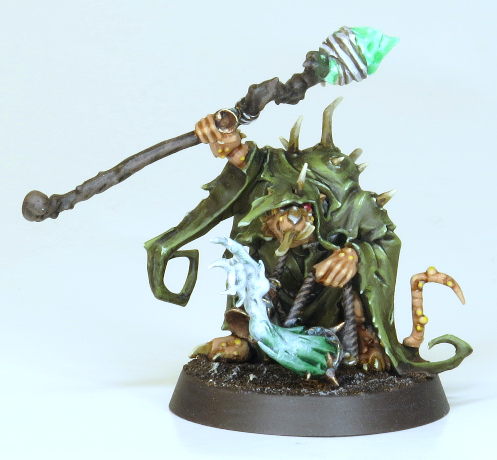
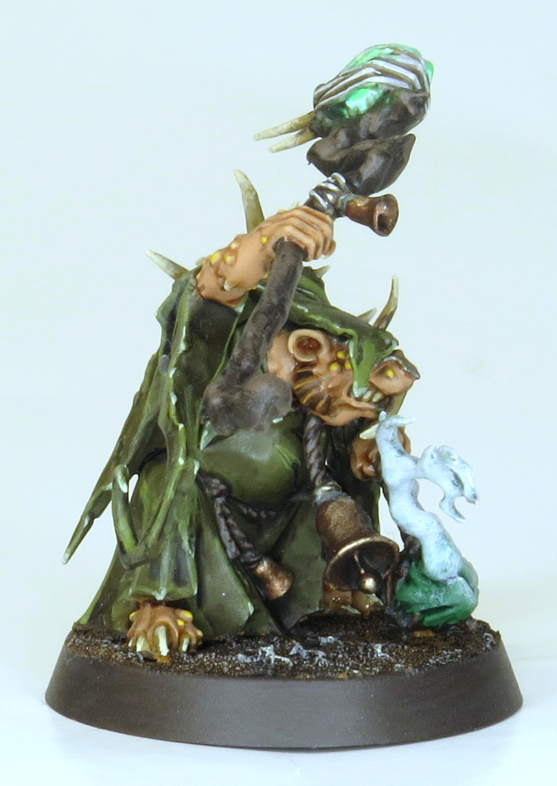
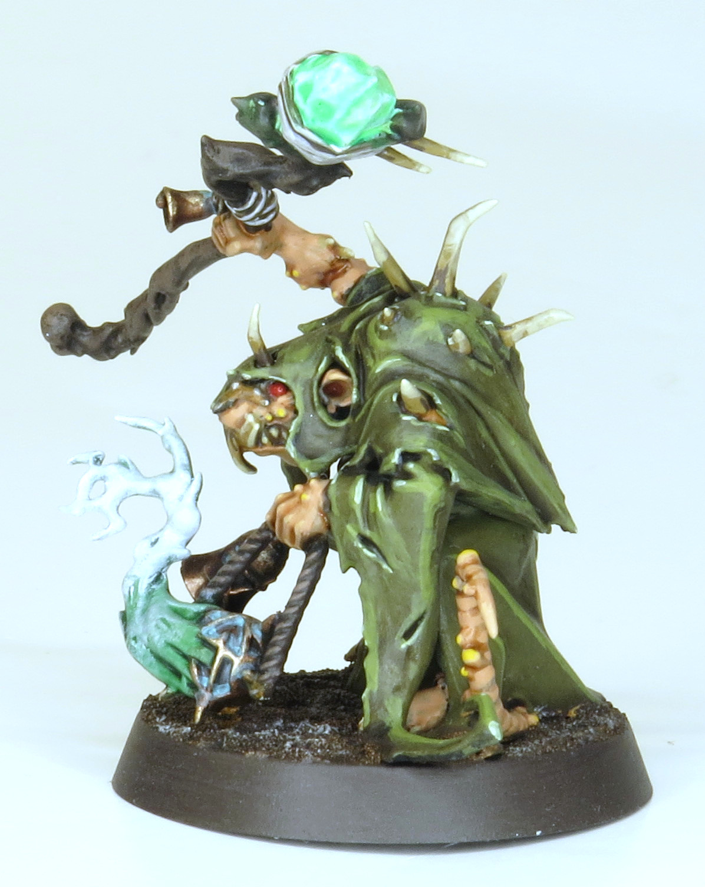
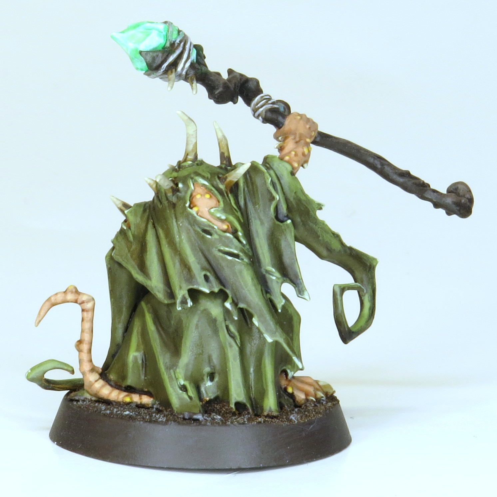

The model that would go on the front of a Plague Furnace, based as an individual Plague Priest. Pretty fun to paint, one of the first things I made to actually look dirty




Paints Used:
Plague Robes: Deathworld Forest, Agrax Earthshade all over, highlight Elysian Green and Elysian Green mixed with Vallejo White
Bone/Teeth/Claws: Zandri Dust, Seraphim Sepia all over, highlight bases with Dryad Bark if large enough, tips with Ushabti Bone and Screaming Skull
Flesh: Cadian Fleshtone, Reikland Fleshshade all over, highlight Cadian Fleshtone and Kislev Flesh, glaze pustules with Flash Gitz Yellow
Rope/Wood: Dryad Back, Agrax Earthshade all over, highlight Gorthor Brown
Bronze: Balthasar Gold, Agrax Earthshade all over, highlight Sycorax Bronze, Nihilakh Oxide in recesses
Rusty Metal: Leadbelcher, Agrax Earthshade all over, Typhus Corrosion for rusty areas, drybrush rust with Trollslayer Orange, highlight Stormhost Silver
Plague Smoke: Celestra Grey, Biel-Tan Green all over, second coat of Biel-Tan Green near source, drybrush Ulthuan Grey and very minimally Vallejo White
Warpstone: Celestra Grey to help paint white, Vallejo White, Hexwraith Flame all over and slightly onto surroundings to make glow
Base: Vallejo Brown Earth Texture, Dryad Bark, Agrax Earthshade all over, light drybrush Screaming Skull, Dryad Bark rim